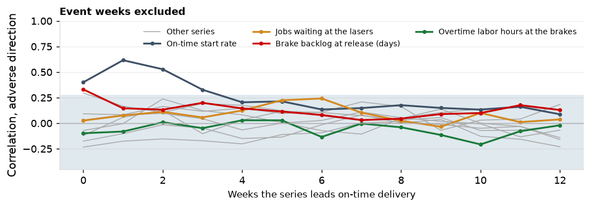

On-time delivery was 76.6% in 2025 (90.1% in Q2 to Q4) and declined by more than 5 points four times in 36 months.
The largest decline, from the week of December 9, 2024, took the four-week figure from 90.4% to 27.1%. Of the six measures in the review set, one leads on-time delivery.
| Indicator | Event excluded: r at best lead (weeks) | Above both | All weeks: r at best lead (weeks) | Above both, all weeks |
|---|---|---|---|---|
| On-time start rate | +0.62 at 1 | yes | +0.96 at 1 | yes |
| Setup efficiency at the brakes | +0.08 at 7 | no | +0.02 at 7 | no |
| Schedule adherence | +0.02 at 8 | no | -0.28 at 11 | no |
| Overtime labor hours at the brakes | +0.03 at 4 | no | +0.76 at 1 | yes |
| Outside-processing receipts on time | +0.11 at 7 | no | -0.02 at 8 | no |
| Kit completeness | +0.13 at 2 | no | +0.22 at 11 | yes |
| Brake backlog at release (days) | +0.20 at 3 | no | +0.89 at 1 | yes |
| Lines promised inside the standard lead time | +0.24 at 2 | no | +0.06 at 10 | no |
| Brake standard hours released | +0.21 at 7 | no | +0.30 at 12 | yes |
| Jobs waiting at the lasers | +0.24 at 6 | no | +0.80 at 7 | yes |
| Jobs waiting at the brakes | +0.19 at 3 | no | +0.87 at 1 | yes |
Every decline in on-time delivery preceded by a flagged indicator at least four weeks earlier.

| Action | Owner | When |
|---|---|---|
| Weekly review of the on-time start rate and jobs waiting at the lasers against their triggers | Production control manager | February 2026 |
| Flags in the ERP release screen: brake backlog above 3 days, promise inside the standard lead time | Production control, IT | April 2026 |
| Flag on a short kit at the kit check | Purchasing manager | March 2026 |
On the record of 2023 to 2025: the on-time start rate moved before 4 of 4 declines, 2 of them four weeks or more ahead, with 6 episodes and 3 followed by a decline; jobs waiting at the lasers before 3 of 4, with 5 episodes and 3 followed. One of the two weekly indicators moved 5, 6, 4 and 7 weeks before the four declines, against 2.7 declines expected on shuffled series and 2.8 on shifted (share at or above 0.21 and 0.19); the pair is not distinguishable from chance. Brake backlog above 3 days marks 4.2% of jobs in Q2 to Q4.
The signal and decline record reviewed quarterly: episodes, declines preceded, and the lead in weeks.